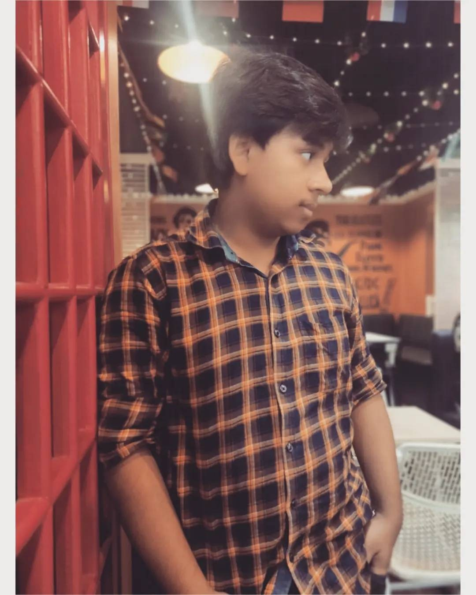

Anik Das

Summary
I am a student of BSc Data science. I want to learn daily new things about data.
Education
- BSc Data Science - Calcutta Institute of Science and Management (2022-Present)
- Higher Seconadary - Gournagar High School (2022)
- Seconadary - Gournagar High School (2020)
Work Experience
IBM SkillsBuild and CSRBOX Academic Internship (June 2023 - July 2023)
- Data Analysis.
- Data Visualization with Python.
- Python Programming
Skills
Python Programming Basic.
Statistics.
Video Editing.
Awards and Certifications
Other
Perticipation Memories